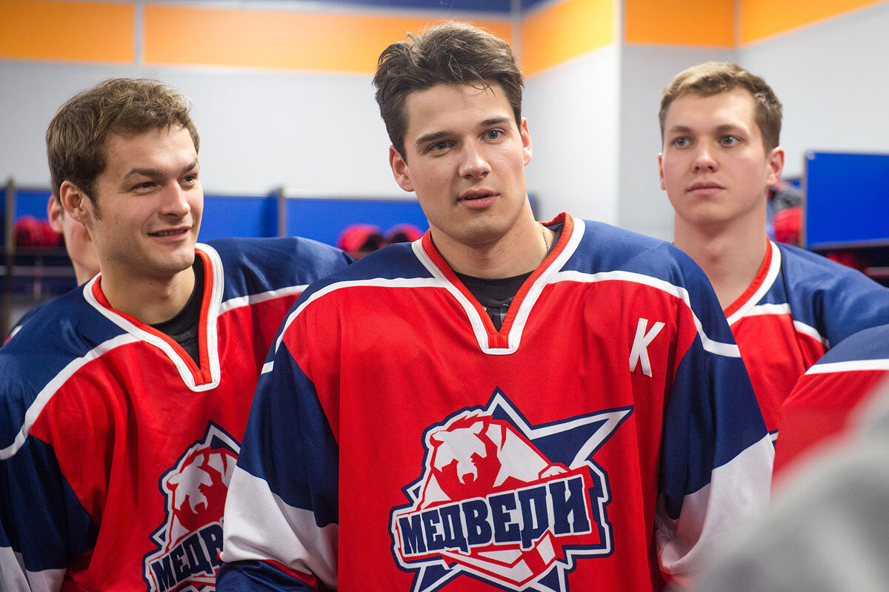

Добро пожаловать на информационный сайт, посвященный сериалу "Молодежка". Сайт создан для фанатов "Молодежки", которые хотят найти информацию о любимом сериале или пообщаться с такими же фанатами на форуме. Здесь Вы сможете найти:
Актуальную информацию о:
Сериале
Актерах
Главных героях
Музыке из сериала
Нужный сезон по его описанию
Других фанатов, с которыми можно обудить любимый сериал
«Молодёжка» — российский телесериал, повествующий о судьбе молодёжной хоккейной команды «Медведи». Выпускался с 7 октября 2013 по 14 февраля 2019 года. Основные съемки проходили в Челябинске. До 2019 года создатели сериала отсняли и выпустили 6 сезонов и 260 серий, но в 2023 стало известно о планах на продолжение сериала. Премьера первой серии "Молодежки: Новая смена" состоялась 5 ноября 2024 года
В хоккейную команду «Медведи» небольшого, но живописного города приходит новый тренер Сергей Макеев, который в прошлом был звездным игроком Национальной хоккейной лиги и завоевал множество наград. Он ставит перед собой амбициозную задачу: сделать из «Медведей» не просто команду, а настоящую семью, где каждый игрок будет чувствовать поддержку и единство с другими. Однако этот процесс обещает быть сложным и многогранным, ведь сейчас хоккеисты совершенно не ощущают себя частью единого целого. Каждый из них сосредоточен на своих личных делах: кто-то старается наладить отношения с семьей, кто-то пытается найти баланс между хоккеем и учёбой, а кто-то просто сталкивается с проблемами в личной жизни
Ситуацию усугубляет и то, что у самого тренера появляются недоброжелатели. Некоторые из них не хотят принимать изменений и стремятся подорвать его авторитет, что добавляет дополнительное напряжение в команду. Героям предстоит пройти долгий путь самосознания и научиться работать вместе, став настоящим коллективом. Они должны найти способ преодолеть свои разногласия и научиться доверять друг другу, чтобы добиваться успеха на льду. Кроме того, важно, чтобы каждый из них нашел свое истинное счастье не только в спорте, но и в личной жизни, ведь только гармония внутри поможет им добиться побед. Впереди их ждут захватывающие тренировки, эмоциональные игры и множество испытаний, которые объединят их как команду и сделают сильнее в личном плане

Кадр из сериала "Молодежка"